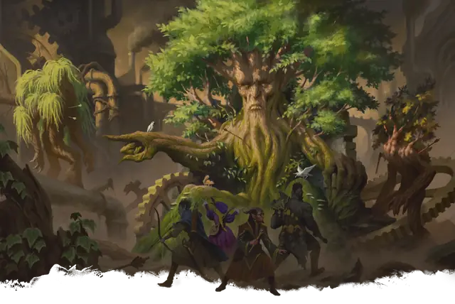

Трент
Treant
Огромное Растение, Хаотичное Доброе

Класс Защиты 16 Инициатива +3 (13)
Хиты 138 (12к12 + 60)
Скорость 30 футов
| мод | спас | ||
|---|---|---|---|
| СИЛ | 23 | +6 | +6 |
| ЛОВ | 8 | −1 | −1 |
| ТЕЛ | 21 | +5 | +5 |
| мод | спас | ||
|---|---|---|---|
| ИНТ | 12 | +1 | +1 |
| МДР | 16 | +3 | +3 |
| ХАР | 12 | +1 | +1 |
Уязвимость к урону Огонь
Сопротивление урону Дробящий, Колющий
Чувства пассивное Восприятие 13
Языки Общий, Друидический, Сильван, Эльфийский
Опасность 9 (5 000 опыта; БВ +4)
Особенности
Осадное чудовище. Трент наносит двойной урон предметам и постройкам.
Действия
Мультиатака. Трент совершает две атаки Размашистым ударом.
Размашистый удар. Бросок рукопашной атаки: +10, досягаемость 5 фт. Попадание: 16 (3к6 + 6) Дробящего урона.
Град из коры. Бросок дальнобойной атаки: +10, дистанция 180 фт. Попадание: 28 (4к10 + 6) Колющего урона.
Оживление деревьев (1/день). Трент магическим образом оживляет одно или два дерева, которые видит в пределах 60 футов от себя. Каждое дерево обладает параметрами Трента за исключением того, что имеет значения Интеллекта 1 и Харизмы 1, не может говорить и у него отсутствует это действие. Дерево имеет то же значение Инициативы, что трент, и ходит сразу после него, а также подчиняется его командам. Дерево перестаёт быть оживлённым либо через 1 минуту, либо когда оно или трент умирает, либо если отдаляется от трента более чем на 120 футов. Затем дерево при возможности пускает корни.
Бонус мастерства +4
Среда обитания Леса
Сокровища Отсутствуют
Трент
Мудрое и могучее ожившее дерево
Тренты — это древние обитатели лесов, гигантские ожившие деревья с изрезанными морщинами лицами. Большинство из них живут веками и знают многие тайны природы. Они предпочитают не вмешиваться в распри краткоживущих существ, но ревностно оберегают свои лесные владения. В гневе тренты способны оживвлять деревья и превратить в союзника целый лес.
Тренты защищают тайны леса, которые во многом определили их вид. Совершите бросок по таблице «Тайна трента» для вдохновения или выберите сами мистическую тайну, которую защищает трент.
Тайна трента
| 1к6 | Трент... |
| 1 | Благословлён богом и выращивает волшебные плоды. |
| 2 | Растёт над входом в подземелье или порталом в Страну Фей. |
| 3 | Служит домом для общины пикси или спрайтов. |
| 4 | Остался последним хранителем утраченных друидических знаний. |
| 5 | Пустил корни на кургане героя и оживляет деревья, похожие на странствующих рыцарей. |
| 6 | Обожжён пламенем и хранит в дупле кости поджигателя. |